IATI-based SDG-colored Location Type Icons
Zero hunger
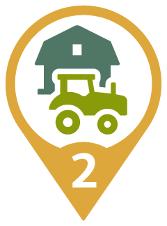
AGRF - agricultural facility
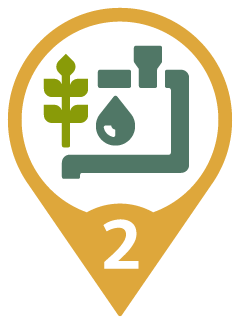
CNLI - irrigation canal
CULT - cultivated area
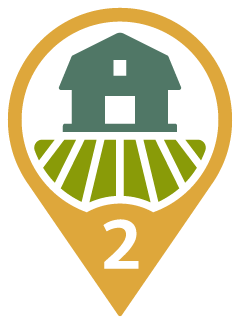
FRM - farm
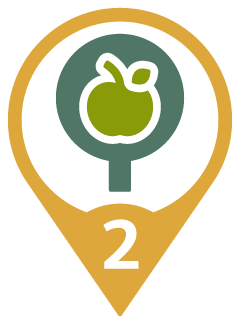
OCH - orchard
Good health and Well-Being
HSP - hospital
HSPC - clinic
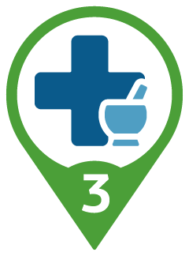
HSPD - dispensary
Quality Education
SCH - school
SCHA - agricultural school
SCHC - college
SCHT - technical school
Clean Water and Sanitation
CNLA - aqueduct
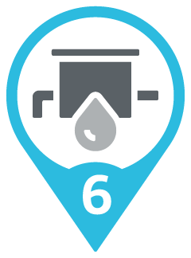
PMPW - water pumping station
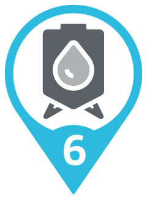
RSVT - water tank
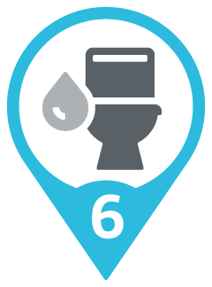
SAN - sanitary facilities
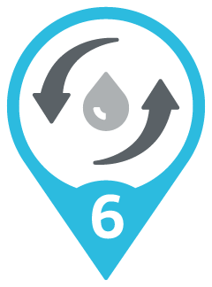
SWT - sewage treatment plant
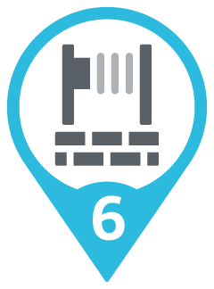
WLL - well
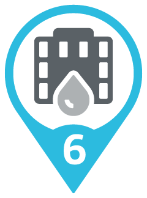
WTRW - waterworks
Affordable and Clean Energy
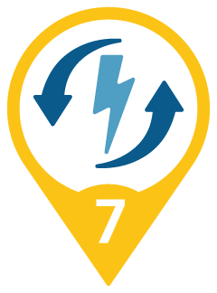
CVS - converter station

EPTD - electric power transmission and distribution
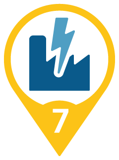
PS - power station
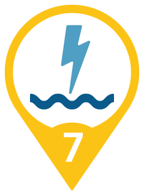
PSH - hydroelectric power station
PVGD - photovoltaik grid
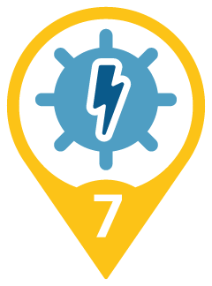
PVPS - photovoltaik power station
Decent Work and Economic Growth
CTRB - business centre
DEVH - housing development
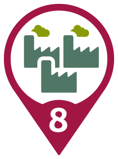
INDS - industrial area
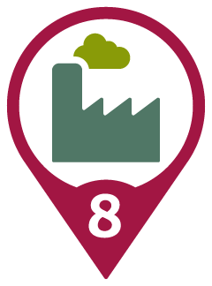
MFG - factory
Industry, Innovation and Infrastructure
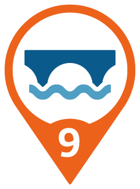
BDG - bridge
BLDG - building
CHN - channel
DAM - dam
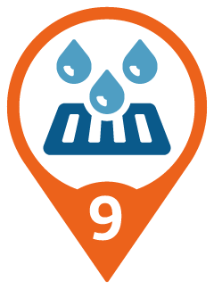
DRCNL - city street with drainage canal
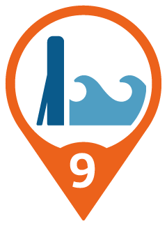
FPWL - flood protection wall
HSE - house
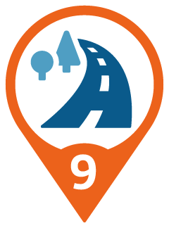
RD - road
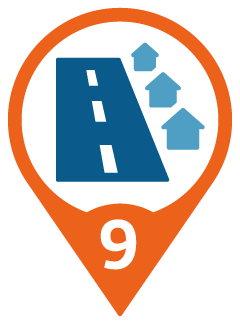
ST - street
Climate Action
FRST - forest
PRK - road
WTRC - watercourse
Peace, Justice and strong Institutions
ADMF - administrative facility
BLDO - office building
CMN - common
CTRCM - community center
GDN - garden
GOVL - local government office
MKT - market
PP - police post
PPL - populated place
ZN - zone